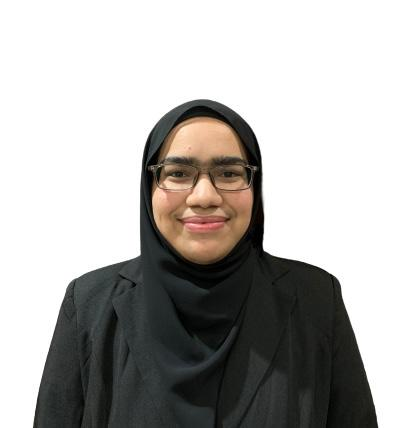

Home
Biodata
Experience
Education
Family
Gallery
My Biodata

- My full name is Bashirah Binti Muhammad Shakil and my friends call me Bash.
- I was born on 29th October 1999 in Kota Bharu Kelantan.
- I am currently pursuing my degree in Finance in UiTM Kota Bharu.
- I had graduated my diploma in Banking in UiTM Machang
- I grew up as the youngest child in my family.
- I am an ambivert which means a person who has a balance of extrovert and introvert features in their personality.
- My hobbies are
singing listening to musics, reading non-fiction books and socializing with people.
- My favourite quote is "when life gives you lemons, make lemonade".
- Here is my favourite song cover singer since high school named Sam Tsui.